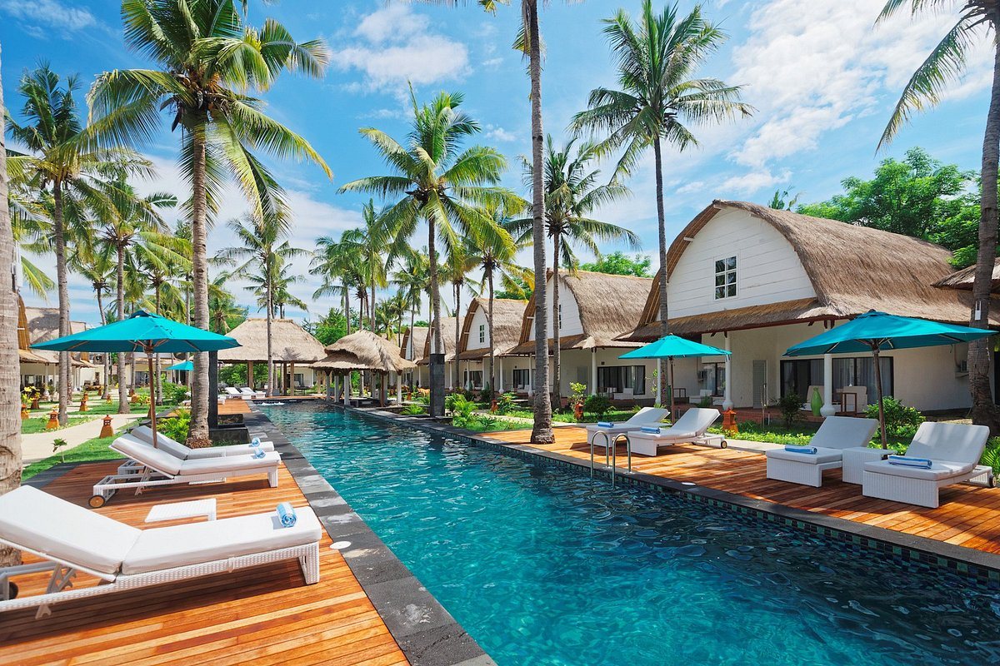

Gili Trawangan
Gili Trawangan adalah pulau kecil di Lombok yang terkenal dengan pantai indah, air laut yang jernih, serta tempat snorkeling dan diving.
Fasilitas:
- Hotel dan resort
- Penyewaan sepeda
- Snorkeling dan diving
- Restoran dan kafe
Gili Trawangan adalah pulau kecil di Lombok yang terkenal dengan pantai indah, air laut yang jernih, serta tempat snorkeling dan diving.

Gunung Rinjani adalah gunung berapi tertinggi kedua di Indonesia yang menjadi tujuan favorit bagi para pendaki dan pecinta alam.

Nikmati keindahan pantai Lombok seperti Tanjung Aan dan Gili Trawangan dengan paket wisata lengkap.
Harga: Rp 3.000.000